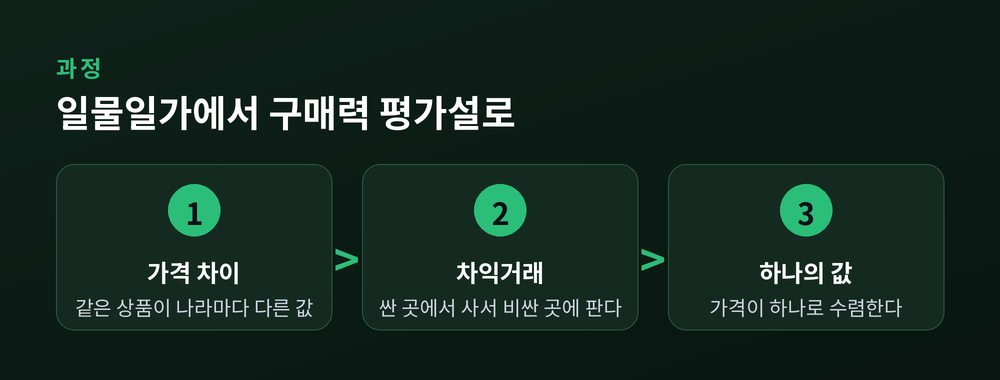
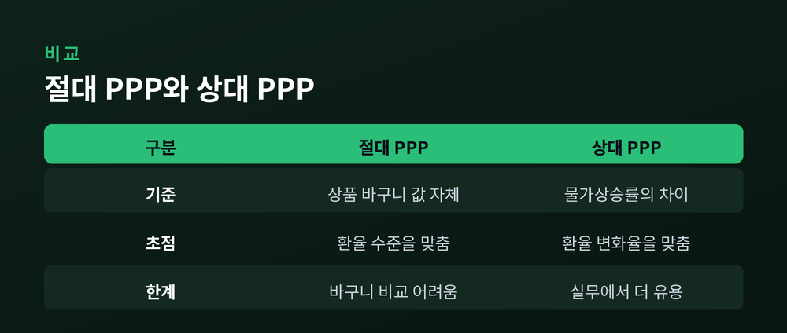
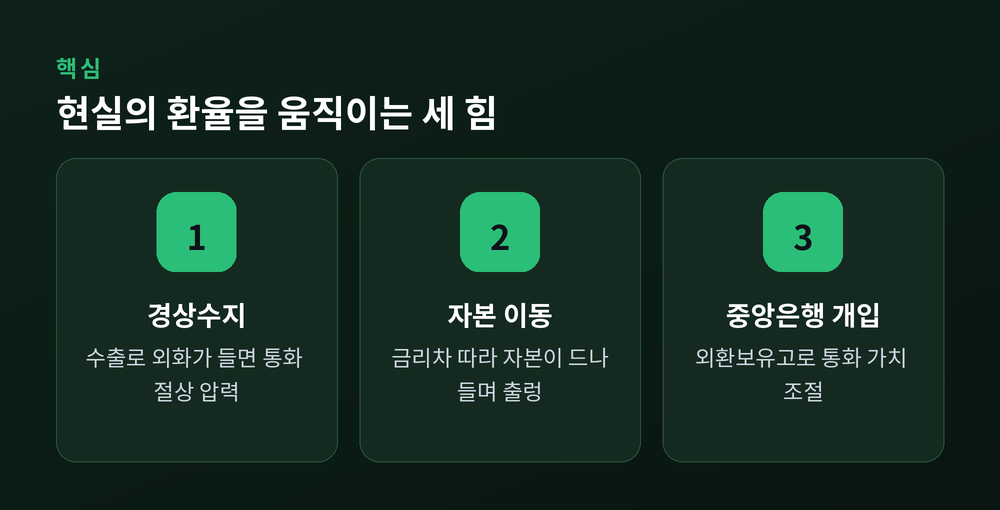

환율은 어떻게 결정되나 — 구매력 평가설과 금리 평형이 말하는 통화 가치의 원리
환율 결정의 원리를 두 이론으로 정리해 보겠습니다. 하나는 물가를 보는 구매력 평가설, 다른 하나는 금리를 보는 금리 평형입니다. 두 축을 이해하면 뉴스 속 환율의 움직임이 조금 다르게 읽힙니다.

먼저 결론부터 말씀드립니다. 환율의 장기 방향은 물가가, 단기 출렁임은 금리와 자본이 주도합니다. 아래에서 그 원리를 하나씩 풀어보겠습니다.
명목환율과 실질환율부터 구분합니다
우리가 매일 보는 "1달러 = 1,380원"은 명목환율입니다. 자국 화폐로 표시한 외국 화폐의 값이지요.
여기에 양국 물가를 반영하면 실질환율이 됩니다. 같은 상품 바구니를 놓고 볼 때, 내 돈의 진짜 구매력을 나타내는 값입니다.
계산은 이렇습니다. 실질환율 = (명목환율 × 외국 물가) ÷ 자국 물가.
이 값이 1이면 양국에서 같은 바구니의 값이 같다는 뜻입니다. 뒤에 나올 구매력 평가설은 결국 "장기적으로 이 실질환율이 일정한 값으로 수렴한다"는 이야기로 요약됩니다.
환율을 이해하는 첫걸음은 이 둘을 섞지 않는 것입니다.
일물일가의 법칙 — 모든 이론의 출발점
경제학에는 오래된 원칙이 하나 있습니다. 일물일가의 법칙입니다.
거래비용과 무역장벽이 없는 시장에서, 같은 물건은 어디서 팔리든 같은 통화로 따졌을 때 하나의 값을 가져야 한다는 원칙입니다.
이유는 차익거래에 있습니다. 같은 물건이 한쪽에서 싸고 다른 쪽에서 비싸면, 싼 곳에서 사서 비싼 곳에 파는 사람이 생깁니다. 그 거래가 쌓이면 가격 차이는 결국 사라집니다.
이 원칙은 상품 하나에 적용됩니다. 이것을 나라 전체의 상품 바구니로 넓힌 것이 구매력 평가설입니다.

구매력 평가설(PPP) — 절대와 상대
구매력 평가설은 두 가지 모습으로 나타납니다.
절대적 구매력 평가설은 두 나라의 상품 바구니 값을 직접 비교합니다. 어떤 바구니가 한 나라에서 400, 다른 나라에서 5달러라면, 균형환율은 400 ÷ 5, 즉 1달러에 80입니다. 값의 수준 자체를 맞추는 방식이지요.
상대적 구매력 평가설은 값의 수준이 아니라 변화율을 봅니다. 두 나라의 물가상승률 차이만큼 환율이 움직인다는 것입니다. 자국 물가가 상대국보다 빨리 오르면, 그만큼 자국 통화의 값은 내려갑니다.
현실에서는 상대 PPP가 더 쓸모 있습니다. 완전히 똑같은 바구니를 나라마다 만들기는 어렵지만, 물가상승률 차이는 비교하기 쉽기 때문입니다.

다만 절대 PPP에는 분명한 한계가 있습니다. 서비스나 부동산처럼 나라 사이에 오갈 수 없는 상품, 그리고 관세와 운송비 때문에 현실의 환율은 이론값에서 자주 벗어납니다.
빅맥지수 — 손에 잡히는 PPP
구매력 평가설을 가장 직관적으로 보여주는 사례가 빅맥지수입니다. 영국 이코노미스트가 1986년부터 발표해 온 지표입니다.
원리는 단순합니다. 전 세계 빅맥 값을 같게 만들어 주는 환율을 구해, 실제 환율과 견줍니다. 실제 환율이 그보다 높으면 그 나라 통화는 저평가, 낮으면 고평가로 봅니다.
수치로 보겠습니다. 2024년 1월 기준 한국 빅맥은 5,500원, 미국은 5.69달러였습니다. 두 값을 맞추는 환율은 5,500 ÷ 5.69, 약 967원입니다. 그런데 실제 환율은 1,336원이었습니다. 계산대로라면 원화는 약 25% 저평가된 셈입니다.
물론 빅맥에는 현지 임대료와 인건비가 섞여 있습니다. 순수한 구매력 비교로 보기는 어렵습니다. 어디까지나 감을 잡는 참고 지표로 삼으시길 권합니다.
금리 평형(이자율 평가) — 단기 환율의 열쇠
물가가 장기를 설명한다면, 단기 환율은 금리가 쥐고 있습니다. 이것을 다루는 이론이 금리 평형입니다.
핵심은 한 문장으로 압축됩니다. "국내 금리는 해외 금리에 자국 통화의 기대 절하율을 더한 값과 같아진다."
자본이 자유롭게 오가는 세상에서는, 같은 통화로 환산한 국내 투자 수익률과 해외 투자 수익률이 같아지는 지점에서 균형이 잡힙니다. 금리가 높은 나라의 통화는 그만큼 절하될 것으로 기대되어, 결국 두 투자의 손익이 맞춰진다는 논리입니다.
금리 평형은 다시 두 갈래로 나뉩니다.
무위험 금리평형(CIP)은 선물환으로 환위험을 미리 고정한 경우입니다. 선물환율이 현물환율과 양국 금리차로 정해지며, 위험 없이 차익을 낼 수 없다는 조건에서 매우 강하게 성립합니다.
유위험 금리평형(UIP)은 환위험을 덮지 않고 미래의 기대 환율을 그대로 씁니다. 투자자가 위험을 개의치 않는다고 가정하는 셈이지요. 두 조건이 모두 성립하면, 선물환율은 미래 환율의 좋은 예측치가 됩니다.
이론이 깨지는 자리 — 캐리 트레이드와 위기
이론은 늘 현실 앞에서 시험받습니다. 금리 평형도 예외가 아닙니다.
대표적 균열이 캐리 트레이드입니다. 금리가 낮은 통화를 빌려 금리가 높은 통화에 투자하는 전략입니다. 이론대로면 고금리 통화가 그만큼 절하되어 이익이 사라져야 합니다. 그런데 현실에서는 고금리 통화가 예상만큼 내려가지 않아, 이 전략이 실제로 수익을 냅니다. 유위험 금리평형이 잘 맞지 않는다는 증거인 셈입니다.
물론 공짜는 없습니다. 평온한 장에서는 벌지만, 변동성이 크게 튀는 위기 국면에서는 순식간에 손실이 납니다.
무위험 금리평형마저 흔들린 적이 있습니다. 2008년 금융위기 때입니다. 평소 0에 가깝던 통화 간 격차가 크게 벌어졌습니다. 달러가 급히 부족해지고, 거래 상대를 믿기 어려워지자, 차익거래가 제 기능을 잃은 탓입니다. 연준이 다른 중앙은행들과 통화 스와프를 열고 나서야 격차가 줄었습니다.
여기서 한 가지를 배웁니다. 이론은 정상적인 시장의 근사일 뿐, 절대 법칙이 아닙니다.
그래서 현실의 환율은 무엇이 움직이나
교과서 밖에서 환율을 흔드는 힘은 좀 더 많습니다.
첫째는 경상수지입니다. 수출로 외화가 들어오면 자국 통화 수요가 늘어 절상 압력이 생깁니다.
둘째는 자본 이동입니다. 금리차와 투자 매력을 좇아 자본이 드나들며 단기 환율을 크게 흔듭니다. 한국과 미국의 금리차가 원화 값을 출렁이게 하는 장면이 그 예입니다.
셋째는 중앙은행의 개입입니다. 통화 강세를 원하면 보유한 달러를 팔아 자국 통화를 사들입니다. 다만 개입할 힘은 외환보유고의 크기에 묶여 있어 무한하지 않습니다.

PPP가 설명하는 반듯한 균형은, 이 힘들이 밀고 당기는 오랜 시간이 지나서야 평균으로 서서히 나타납니다.
정리하면 이렇습니다. 환율은 하나의 공식이 아니라, 물가와 금리라는 두 원리가 시간의 축 위에서 번갈아 작동한 결과입니다.
장기의 방향은 구매력이, 오늘의 숫자는 금리와 자본이 씁니다.
환율을 읽는다는 것은, 결국 어느 시간대를 보고 있는지를 먼저 정하는 일입니다.